Balance + "Add" CTA
Amount + Gateway limits
"In Progress - 04:26 - ₹1,500"
3-step stepper
"₹1,500 is facing trouble"
12-digit UTR input
UPI / Bank Transfer
Pick VPA + consent
[External deeplink]
5 min countdown
Beneficiary + IFSC
[Manual NEFT/RTGS/IMPS]
Auto-detected
Amount + bank
4-digit PIN
6-digit email OTP
All Entry Points to Add Money
Home Wallet Strip
"Add" button on balance card (invested users only)
Wallet Tab → TopUp
Dedicated top-up tab in wallet screen
Trade Widget
Low balance error → "Add funds" CTA
Futures Quick Buy
Insufficient funds during quick buy
Options Order Pad
Low balance error in options trading
KYC Completion
Auto-redirect to wallet after KYC verified
Bank Verified
Redirect after bank account linked
Algo Trading
Deposit popup for algo trading
Referral Section
Claim referral earnings
Ongoing Txn Banner
"Check Status" on home page
Trouble Banner
"Verify Payment" on home page
Live Screenshots (from device)
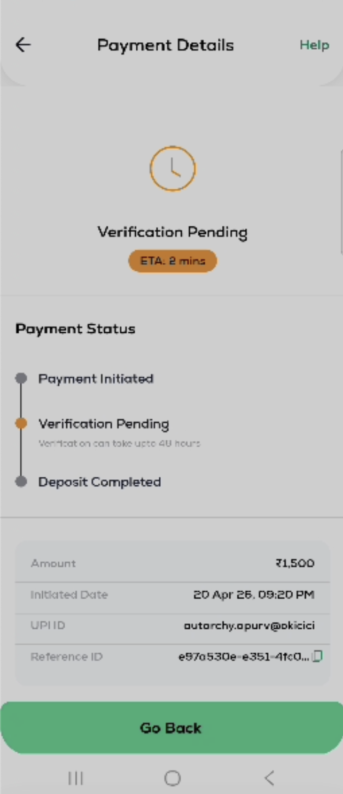
ETA: 2 mins | 3-step stepper
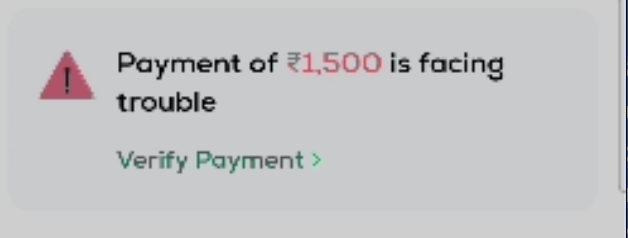
"₹1,500 is facing trouble"
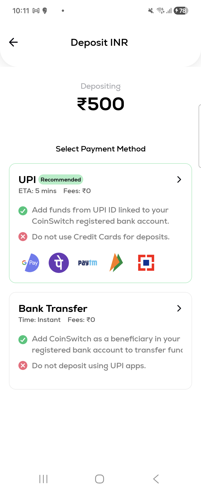
UPI (Recommended) + Bank Transfer
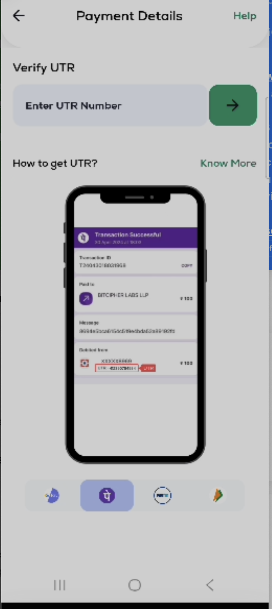
12-digit UTR input + mockup
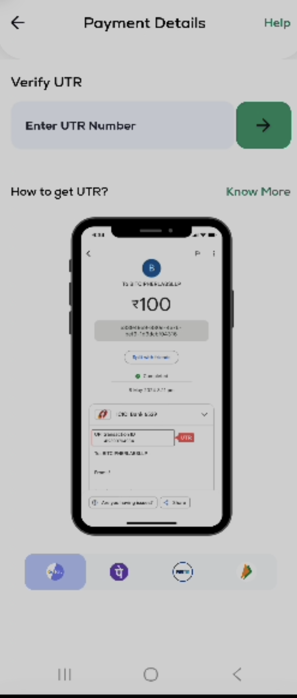
Per-app education carousel
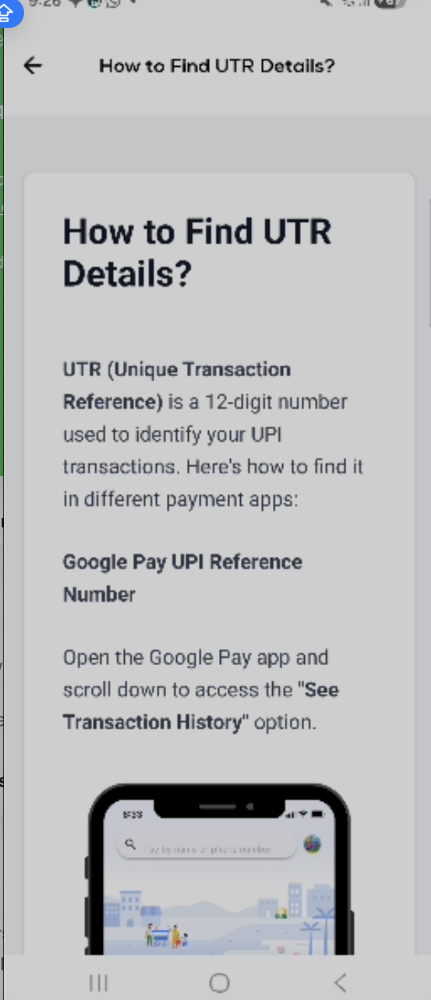
"12-digit number" guide
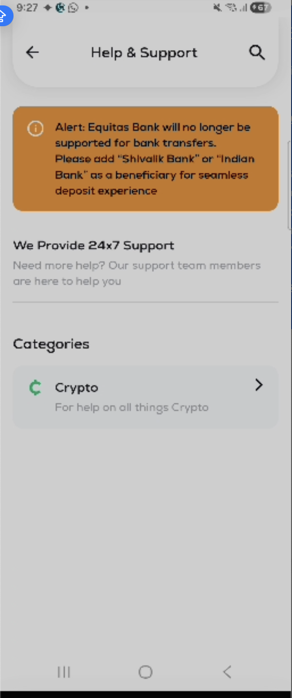
Equitas Bank deprecation alert
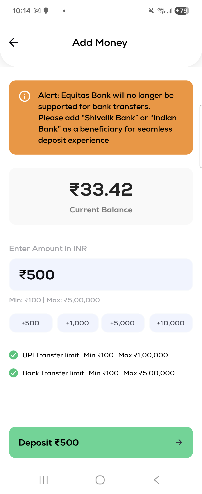
₹500, limits, Equitas alert
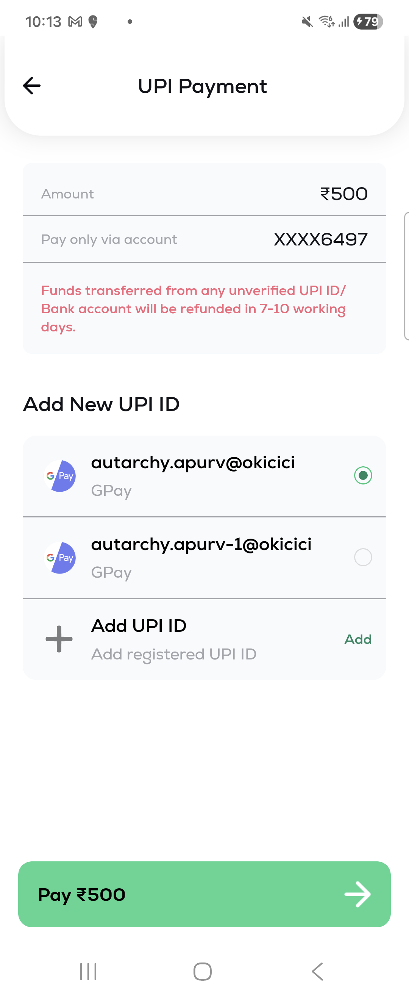
GPay IDs + Pay ₹500
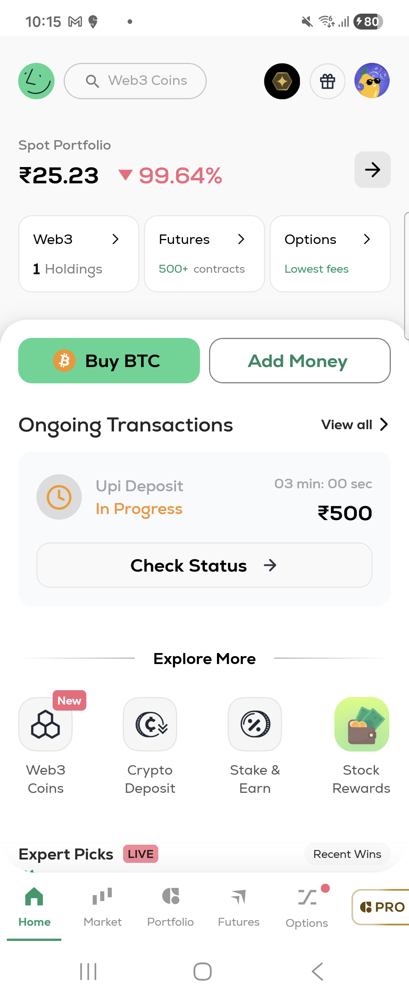
Wallet strip + Ongoing Txn
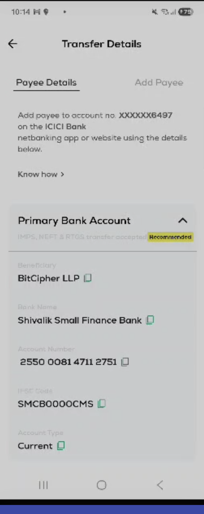
Shivalik Bank (Recommended)
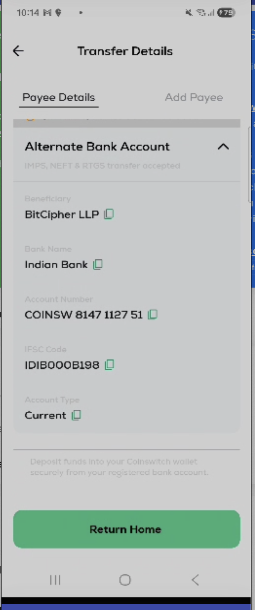
Indian Bank
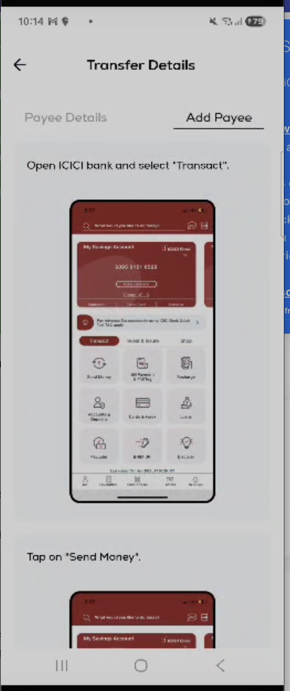
ICICI iMobile steps
1. Home — Wallet Strip
Balance card (free + locked) with "Add" CTA button. Fee credits card alongside. Only shown for invested users (isAllStepsCompleted).
2. Home — Ongoing Txn Banner
"Upi Deposit - In Progress - 04 min 26 sec - ₹1,500 - Check Status →". Timer from ETA calculation. Refresh CTA when IN_PROGRESS.
3. Home — Trouble Banner
"Payment of ₹1,500 is facing trouble" with warning triangle. "Verify Payment >" CTA routes to UTR verification.
4. Wallet Home
Balance (inr_free_balance + inr_blocked_balance), tabs: Wallet, TopUp, Withdraw, Fees, Rewards. Transaction history with pagination.
5. Deposit Form
Amount input with pill buttons (₹500, ₹1000, etc). Per-gateway min/max limits. Error: "You cannot deposit less than ₹X". Gateway availability icons.
6. Gateway Selection
Payment method cards: UPI (if available + not 12AM-3AM), Bank Transfer. Per-card min/max, availability status, partner info.
7. UPI Selection
Pick saved UPI ID or verify new VPA. Consent bottom sheet. Surepass VPA validation. Vendor detection from @suffix.
8. UPI Deposit Loader
Circular countdown timer (~5 min). 3-step stepper: Payment Initiated → Verification in Progress → Deposit Completed. "Go to Home" button.
9. UPI Deposit Status
Final status with stepper. "Verification Pending - ETA: 2 mins - can take upto 40 hours". Details: Amount, Date, UPI ID, Reference ID. "Help" link.
10. UTR Verification
"Enter UTR Number" input. "How to get UTR? Know More" link. Per-app education with phone mockups (GPay, PhonePe, Paytm, Amazon). 12-digit number.
11. Bank Transfer
VA beneficiary details (name, account number, IFSC, bank). "Add Payee" guide per bank (SBIN, Axis, ICICI). "Copy" buttons. Transfer type restrictions.
12. Help & Support
Bank deprecation alert: "Equitas Bank will no longer be supported. Add Shivalik Bank or Indian Bank". 24x7 support. Categories: Crypto.
13. Withdrawal Form
Amount input (min ₹100). Bank account selection. Compliance gates: TOS → PMLA → ReKYC. Fee display.
14. Withdrawal Security
Step 1: 4-digit PIN (N attempts, lockout → reset). Step 2: 6-digit email OTP (60s resend timer). Dual-gate 2FA.
Bank / VA Providers
Shivalik Small Finance Bank ACTIVE — PRIMARY VA
| Role | Primary VA provider for Bank Transfer deposits |
| Transfer Methods | NEFT, RTGS, IMPS (all supported) |
| IFSC | SMCB0000CMS |
| Beneficiary | BitCipher LLP — Account: 2550 0081 4711 2751 |
| Tag | RECOMMENDED |
| Time Restriction | Unavailable from 10:00 PM – 06:00 AM |
Indian Bank ACTIVE — ALTERNATE VA
| Role | Alternate VA provider for Bank Transfer deposits |
| Transfer Methods | NEFT, RTGS, IMPS (all supported) |
| IFSC | IDIB000B198 |
| Beneficiary | BitCipher LLP — Account: COINSW 8147 1127 51 |
| Availability | 24/7 — no time restrictions |
Karnataka Bank ACTIVE — UPI ACQUIRER
| Role | UPI payment acquirer — processes UPI deposits |
| UPI VPAs (6) |
csvda@kbl
depositcs@kbl
cspayin@kbl
bldeposit@kbl
bldeposit5@kbl
bldeposit6@kbl
|
| Notes | Handles 6 of 7 UPI VPAs. User's UPI payment goes to these VPAs. |
Equitas Bank DEPRECATED
| Role | Payment acquirer — UPI + Bank Transfer (Virtual Account) |
| Transfer Methods | IMPS only (no NEFT/RTGS) |
| UPI VPAs (1) |
yap165725@equitas
|
| Deprecation | "Equitas Bank will no longer be supported for bank transfers. Please add Shivalik Bank or Indian Bank as a beneficiary for seamless deposit experience." |
| Impact | Users must switch beneficiary to Karnataka Bank VA. IMPS-only limitation was a pain point. |
Verification Vendor
Surepass ACTIVE
| Role | UPI ID verification via reverse penny drop |
| Feature Flag | isSurepassActive — toggles VPA validation method |
| API | /api/v1/payment-service/upi/add-upi-id with vendor param |
| Statuses | SUCCESS, PENDING, VERIFICATION_REQUIRED, FAILED |
UPI App Detection (VPA Suffix → App Name)
| App | VPA Suffixes | UTR Location in App |
|---|---|---|
| Google Pay | @okaxis @okhdfcbank @okicici @oksbi | Transaction History → tap → "UPI Reference Number" |
| PhonePe | @ybl @ibl @axl | Transaction Details → UTR field (red highlight) |
| Paytm | @paytm @ptsbi @pthdfc @ptaxis @ptyes | Passbook → tap transaction → UTR |
| Amazon Pay | @apl @yapl @rapl | Activity → Transaction Details |
@waicici @waaxis @wahdfcbank @wasbi | Payments → Transaction | |
| BHIM | @upi | Transaction Details |
| CRED | @axisb | Transaction History |
| Groww | @axisbank | Transaction History |
| Slice | @sliceaxis | Transaction History |
| Jupiter Money | @jupiteraxis | Transaction History |
| Samsung Pay | @pingpay | Transaction History |
| Mobikwik | @ikwik | Transaction History |
| Bajaj Finserv | @abfspay | Transaction History |
Deposit States
•
should_process_deposit → auto-credit to wallet•
should_process_refund → refund to bank (user provides account + IFSC)•
cta_use_case: "contact_support" → route to Help & Support
Withdrawal States
Status → UI Mapping
| Status | Icon | Color | Home Banner | Refresh CTA |
|---|---|---|---|---|
| NOT_STARTED | — | Grey | Hidden | No |
| INITIATED | pending.png | Orange | Shown | No |
| IN_PROGRESS | pending.png | Orange | "In Progress" + timer | Yes |
| PENDING | pending.png | Orange | Shown | No |
| DELAYED | delayed.png | Orange | Shown | No |
| COMPLETED | complete.png | Green | Hidden | No |
| FAILED | error.png | Red | "Facing trouble" | No |
ETA Calculation
Add Money APIs
| # | Endpoint | Method | Purpose |
|---|---|---|---|
| 1 | /api/v1/user/user_additional_data?symbol=inr | GET | Deposit config — per-gateway limits, partner availability, UPI time range |
| 2 | /api/v1/custody-wallet-user/deposit | POST | Initiate deposit — params: currency, amount, gateway_name, gateway_account_type, generate_account |
| 3 | /api/v1/custody-wallet-user/deposit (V2) | POST | Multi-VA deposit — feature flag: multipleVA |
| 4 | /api/v1/payment-service/upi/deposit-init | POST | UPI intent deposit — params: amount, payment_mode:"UPI", currency:"inr", upi_id, device_os |
| 5 | /api/v1/payment-service/upi/get-upi-ids | GET | List saved UPI IDs — param: isSurepassActive |
| 6 | /api/v1/payment-service/upi/add-upi-id | POST | Verify new UPI ID — params: upi_id, vendor (from suffix detection) |
| 7 | /api/v1/payment-service/upi/redirect-url | POST | Reverse penny drop link — param: vendor |
Deposit Status APIs
| # | Endpoint | Method | Purpose |
|---|---|---|---|
| 8 | /api/v1/payment-service/transaction-details/fetch-ongoing | POST | Ongoing txns for home banner — returns recent_transaction + ongoing_transactions count |
| 9 | /api/v1/payment-service/deposit-details/fetch-ongoing | POST | Ongoing deposits specifically |
| 10 | /api/v1/payment-service/deposit-details/fetch | POST | Deposit status details — param: deposit_id → returns status_map (3-step stepper) |
| 11 | /api/v1/payment-service/deposit-details/fetch-from-utr | POST | UTR lookup — params: deposit_id, user_entered_utr → should_process_refund/deposit |
| 12 | /api/v1/payment-service/deposit-details/sync-refund-for-utr | POST | Initiate refund — params: user_bank_account_number, user_ifsc_code, user_entered_utr |
Withdrawal APIs
| # | Endpoint | Method | Purpose |
|---|---|---|---|
| 13 | /api/v1/custody-wallet-user/withdraw | POST | Initiate withdrawal — params: currency:"inr", bank_account_uuid, amount (min ₹100) |
| 14 | /api/v1/secure-action/init | POST | Start 2FA — params: use_case:"WITHDRAWAL", withdrawal_uuid |
| 15 | /api/v1/secure-action/verify | POST | Verify PIN or OTP — params: secure_action_id, verification_entity:"PIN"/"EMAIL", code |
| 16 | /api/v1/secure-action/re-init | POST | Resend OTP — params: secure_action_id, channel_uuid |
| 17 | /api/v1/reset-pin/init | POST | Reset PIN after lockout |
Wallet APIs
| # | Endpoint | Method | Purpose |
|---|---|---|---|
| 18 | /api/v1/custody-wallet-user/account-balances | GET | Wallet balance — inr_free_balance + inr_blocked_balance |
| 19 | /api/v1/custody-wallet-user/bank-account | GET | Linked bank account details |
| 20 | wallet-transactions_v2?limit=N&deposit_cursor=X&withdrawal_cursor=Y | GET | Transaction history — paginated, deposits + withdrawals |
| 21 | /api/v1/cspro/get-wallet-config | GET | Min/max deposit/withdrawal limits |
| 22 | /api/v1/cspro/get-fee-discounting-data | GET | Fee discounting tier — final_fee, fee_discount |
| 23 | /api/v1/cspro/get-user-volume-data | GET | User trading volume level for fee calculation |
Complete Flow: What Comes When
Per-gateway min/max validated. Gateway availability icons shown.
API: ADD_MONEY_LAYOUT(depositAmount, version:"v4")
Card shows: availability tag, transfer methods supported, min/max limits.
API: PAYMENT_GATEWAY_LAYOUT(depositAmount, version:"v2")Mutation: DEPOSIT_MUTATION_V2POST /api/v1/custody-wallet-user/depositParams:
{ currency: "inr", amount, gateway_name: "IDBI", gateway_account_type: "BANK_ACCOUNT", generate_account: true }Returns:
additional_data containing VA beneficiary details.
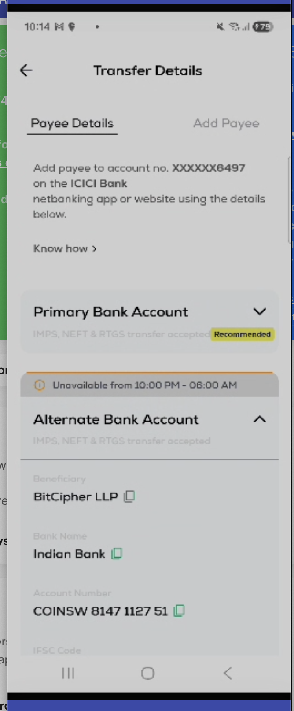
They need to add CoinSwitch's VA as a payee/beneficiary in their bank app, then make a transfer.
API: getBankUrls(ifsc_code.slice(0, 4)) → returns bank netbanking URL.If URL exists → redirect to bank. If empty → show "Add Payee" guide.
Credits the amount to user's CoinSwitch wallet. Transaction appears in wallet history.
Home page banner updates: "Deposit Completed".
"Add Payee" Instructions (Per Bank)
SBI (YONO)
1. Open YONO app
2. Tap "YONO Pay"
3. Tap "Quick transfer"
4. Select "Other Bank"
5. Enter beneficiary details
6. Tap "Next" → Enter OTP
7. Beneficiary added
Axis Bank
1. Open Axis Mobile app
2. Tap "Add New"
3. Select "Other Bank Payee"
4. Enter beneficiary name
5. Enter account number
6. Enter IFSC code
7. Tap "Add payee"
ICICI (iMobile)
1. Open ICICI bank, select "Transact"
2. Tap "Send Money"
3. Select COINSWITCH payee
4. Enter ₹100, select NEFT/RTGS/IMPS
5. Tap "Proceed"
6. Confirm with OTP
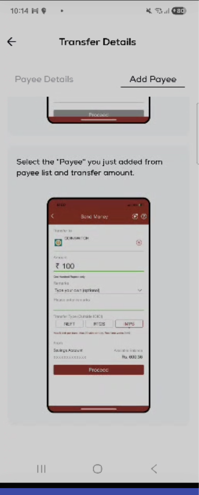
Union Bank (Vyom)
1. Open Vyom app
2. Tap "Send Money"
3. Tap "Quick Transfer"
4. Select "Other Bank Account"
5. Enter account details
6. Tap "Proceed"
7. Confirm with OTP
Default (All Other Banks)
1. Login to your banking app
2. Go to "Add Payee/Beneficiary"
3. Select "Other Bank"
4. Enter beneficiary name
5. Enter account number + IFSC
6. Verify with OTP
7. Make transfer
Bank Netbanking Redirect URLs
getBankUrls(ifsc_code.slice(0,4)). If a URL exists, user is redirected to their bank's netbanking login. Otherwise, "Add Payee" guide is shown.
| Bank | IFSC Prefix | Redirect URL |
|---|---|---|
| Indian Bank | IDIB | netbanking.indianbank.in/jsp/startIB.jsp |
| Shivalik Bank | SMCB | shivalikinternetbanking.com/corp/AuthenticationController... |
| Karnataka Bank | KARB | moneyclick.ktkbank.com/BankAwayRetail/AuthenticationController... |
| SBI | SBIN | YONO app (no URL redirect) |
| HDFC | HDFC | Mobile app (no URL redirect) |
| ICICI | ICIC | iMobile app (no URL redirect) |
| Axis | UTIB | Axis Mobile app (no URL redirect) |
VA Beneficiary Data Model
Transfer Methods: What's Supported Where
| Method | Indian Bank (Primary) | Equitas (Deprecated) | Speed | Limit |
|---|---|---|---|---|
| IMPS | Supported | Supported | Instant (seconds) | Up to ₹5L per txn |
| NEFT | Supported | Not supported | 30 min batches | No limit |
| RTGS | Supported | Not supported | Instant (real-time) | Min ₹2L, no max |
Equitas → Shivalik/Indian Bank Migration
Indian Bank (IFSC: IDIB) — Full IMPS + NEFT + RTGS support
Both recommended as replacements for Equitas IMPS-only limitation.
API Call Sequence
When UTR Flow Triggers
Per-App UTR Education
Google Pay
1. Open Google Pay
2. Scroll to "See Transaction History"
3. Tap the transaction
4. Find "UPI Reference Number" (12 digits)
PhonePe
1. Open PhonePe
2. Go to Transaction History
3. Tap the ₹100 payment to BITCIPHER LABS LLP
4. UTR is highlighted with red "UTR" badge
Paytm
1. Open Paytm
2. Go to Passbook
3. Tap the transaction
4. Find UTR number in details
Amazon Pay
1. Open Amazon Pay
2. Go to Activity
3. Tap Transaction Details
4. Find UTR reference number
Refund Sub-flow
Time Restrictions
| Rule | Time | Behavior |
|---|---|---|
| UPI disabled | 12:00 AM – 3:00 AM | UPI card hidden or shows "UPI is unavailable till 3 AM". Bank Transfer card promoted to top. |
Amount Limits
| Channel | Min | Max | Source |
|---|---|---|---|
| UPI | Dynamic (from config) | Dynamic (from config) | v1_deposit_metadata.UPI.partners[].min/max |
| Bank Transfer | Dynamic | Dynamic | v1_deposit_metadata.BANK_ACCOUNT.partners[].min/max |
| Withdrawal | ₹100 (hardcoded) | Dynamic | Hardcoded in transformer + get-wallet-config |
Compliance Gates
| Gate | Check | Blocks | UI |
|---|---|---|---|
| KYC | is_kyc_complete | All financial ops | Redirect to KYC flow |
| TOS | getUserTosStatusPostLogin() | Deposit + Withdraw | Consent modal |
| PMLA | is_pmla_done | Deposit + Withdraw | PMLA form |
| ReKYC | is_rekyc_enabled | Withdraw (soft block) | Nudge popup |
| Bank Verify | Surepass penny drop | Withdraw | Bank verification bottom sheet |
Vendor Rules
Security Rules
| Rule | Details |
|---|---|
| Withdrawal PIN | 4 digits. remaining_validation_count decrements per wrong attempt. Lockout → PIN reset flow. |
| Email OTP | 6 digits. 60-second resend timer (decimal: 0.6 → 0.0). Sent to user's registered email. |
| Dual-gate | Both PIN AND OTP required. Cannot skip either. |
Edge Cases
| Scenario | Behavior |
|---|---|
| UPI app killed during payment | AppState listener detects resume → navigate to UPIDEPOSITSTATUS with callback data |
| Payment timeout (5 min) | Loader transitions to status screen. Stepper shows "Verification Pending". |
| Verification pending >40 hours | Status shows "Verification can take upto 40 hours". Trouble banner on home. |
| UTR not found in system | cta_use_case: "contact_support" → route to Help & Support |
| Refund initiation fails | is_initiated: false → show error + Contact Support |
| Bank transfer VA unavailable | Gateway card shows "Unavailable" tag. Sub-header: "Only IMPS transfer accepted". |
| Multiple VAs per user | Sorted by priority (primary=1, secondary=2). V2 API with multipleVA flag. |
| Non-invested user on home | Wallet strip hidden. Add Money only via direct wallet tab navigation. |